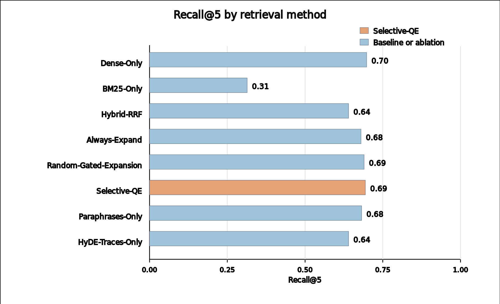
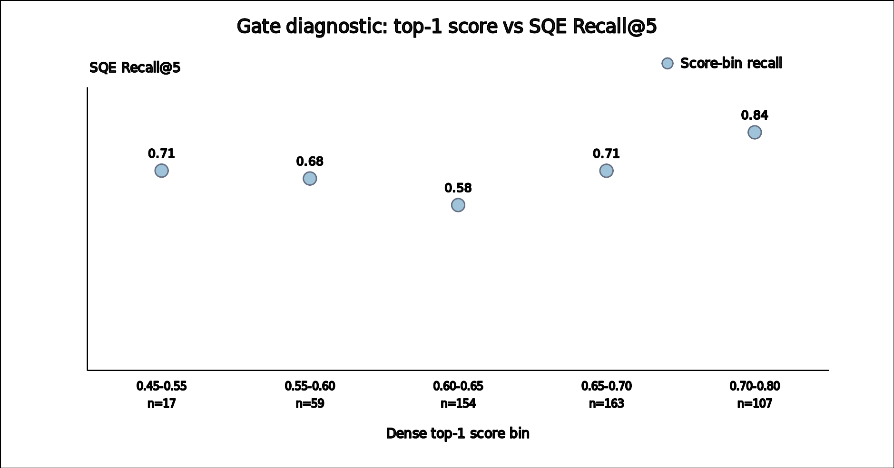

Selective Query-Side Expansion
for Agent Memory Retrieval
A practical way to recover useful memories when agent logs and user questions use different language.
Salomon DIEI
School of Computer Science and Engineering, KOREATECH
The talk in one minute
Problem
Useful past memories exist, but retrieval misses them because logs and questions use different words.
Idea
When retrieval is uncertain, ask again using execution-style traces and paraphrased queries.
Result
SQE is competitive with dense retrieval and above Hybrid-RRF, but end-to-end Pass@1 is still pending.
Why agent memory retrieval fails
What is stored
- Terminal outputs
- Stack traces
- Test failures
- Patch diffs
What is asked later
- Natural-language questions
- High-level bug descriptions
- Short reminders
- Issue summaries
The memory may be present, but the query does not look like the memory.
The simple intuition
Ask the memory index in the language the memory was written in.
1. Try normal retrieval
Use the original question first. If confidence is high, avoid extra compute.
2. Expand only if needed
Generate execution-style traces and paraphrases for low-confidence queries.
3. Fuse the results
Retrieve each variant and combine rankings with Reciprocal Rank Fusion.
How SQE works

The memory store is unchanged. Only the query is expanded when the first retrieval result looks uncertain.
Evaluation design
memory episodes per seed
query-memory pairs per seed
independent memory-index seeds
paired query rows in aggregate
Metric used today
Recall@5: does the target memory appear in the top five retrieved memories?
Important boundary
This is a retrieval study. Agent Pass@1 task success has not been measured yet.
Main retrieval result
Dense retrieval
69.8%Strong baseline, seed-42 audit run.
SQE
69.4%Selective expansion, seed-42 audit run.
Hybrid-RRF
64.0%Sparse+dense fusion baseline, seed-42 audit run.
Interpretation: SQE is competitive with dense retrieval and above Hybrid-RRF, but it does not beat the strongest baseline in this seed.
Method comparison

The key comparison is retrieval quality, not final software-task success.
Across independent memory seeds
Mean Recall@5
- SQE: 69.4%
- Dense: 68.5%
- Always-expand: 69.2%
- Random-gated: 68.9%
Paired effect
SQE vs Dense: +0.9 points
95% interval: [0.1, 1.7]
Budget control
SQE vs Random-gated: +0.5 points
The interval crosses zero.
Current evidence supports a small retrieval-only difference, not a strong end-to-end performance claim.
What did not work yet: the confidence gate

Finding
The dense top-1 score does not separate easy and hard retrieval cases cleanly.
Implication
The method idea is plausible, but the gate needs stronger calibration before a top-tier claim.
What I can claim today
Supported by the current data
- SQE can be added at retrieval time.
- It leaves memory writing unchanged.
- It reduces expansion calls relative to always-expand.
- It gives a small Recall@5 gain over dense retrieval across seeds.
Not claimed yet
- No Pass@1 agent-success result yet.
- No human-audited query-label result yet.
- No clear advantage over the random-gated budget control.
- The gate is not solved.
Next steps before submission
Run downstream Pass@1
Measure whether retrieved memories actually help solve software tasks.
Collect human labels
Audit whether generated queries match realistic user or agent questions.
Improve the gate
Validate a selector using score margin, dense-sparse agreement, and query features.
Release artifacts
Publish code and dataset package with GitHub and Hugging Face links.
Thank you
Salomon DIEI | salomon@koreatech.ac.kr
Takeaway: SQE is a practical retrieval-time idea with a modest retrieval signal and clear next experiments.